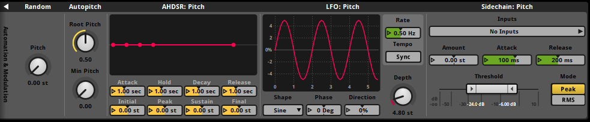
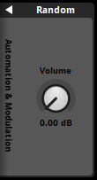
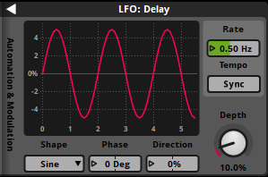

FMOD Studio User Manual 2.02
- Welcome to FMOD Studio
- FMOD Studio Concepts
- Organizing the Project
- Authoring Events
- Working with Instruments
- Managing Assets
- Parameters
- Getting Events into Your Game
- Mixing
- The Sandbox
- Editing During Live Update
- Profiling
- Dialogue and Localization
- Using Source Control
- Supporting Downloadable and User-generated Content
- Advanced Topics
- Quick Start Tutorial
- Event Macros Drawer Reference
- Instrument Reference
- Plug-in Reference
- Modulator Reference
- Parameters Reference
- Scripting
- Scripting API Reference
- Keyboard Shortcut Reference
- Troubleshooting
- Glossary
- Appendix: Celeste Getting Started Guide
- Appendix: Reaper Integration
21. Modulator Reference
Modulators provide extended functionality for various FMOD Studio properties.
Modulators allow the value of a property to change dynamically, in a variety of specific ways. They provide methods of ramping in and out of certain values at certain stages of an object's life cycle, generating randomized values to provide more variety, adjusting values based on the volume of a specified output signal, or even automatically pitch instruments up or down depending on a parameter value.
A modulator's value is applied on top of the property's base value and any resolved automation value (i.e. the result of multiple automation curves placed on one property).
When multiple modulators are used on the same property, the resulting values of all the modulators are combined additively.
For information on adding modulators to various properties in your project, see the Authoring Events chapter on automation and modulation.

21.1 How to Read This Reference
- Property (Control)
- The name of the property as it appears in FMOD Studio and the type of control it is manipulated by. The types of controls are:
Button: Click on a button to execute a command. Some buttons are toggles that are colored yellow to indicate if they are active.
Dial: A control knob. Click and drag up and down to adjust the property's value.
Dropdown: A menu where you select a value from a list. The current selection is displayed in the collapsed dropdown menu.
Number Box: A box displaying the value of the property. Click on the box's edit triangle to manually enter a value, or click and drag the value to make adjustments. Double click on the number box to reset its value.
Ribbon Slider: A pair of horizontal sliders. Click and drag each slider handle left or right to adjust minimum and maximum values. If these values differ then a range is created between them. Click and drag this range to adjust both left and right handles at the same time. - Units
- What the property is measured in. If a property does not use a unit of measurement no unit will be listed. Valid units are:
st: Semitones
dB: Decibels
%: Percentage points
ms: Milliseconds
sec: Seconds - Range
- The minimum and maximum values valid for that property. If a property does not use a range this will not be listed.
21.2 Random Modulator

A random modulator offsets a property value by an amount that is randomly selected from a given range.
The random value is only generated when the event or snapshot instance with a modulated property is played, or the instrument whose property is being modulated is triggered. The frequency at which the random value is provided to the property in question depends on the context of where it is being used.
For example, a random modulator on an event's pitch property will only generate a value when the event instance is started and won't regenerate a new one in the case of the event using a loop region. To generate a new random value, the event instance or snapshot instance must be restarted, or the instrument must be retriggered.
When a random modulator is placed on a property that uses dB, it provides a value from a range where the current value is the maximum value and the minimum value is the current value minus the random amount provided. When a random modulator is placed on a pitch property, it provides a value within the specified range of values, centered on the property's post-automation value. When a random modulator is placed on other properties, it takes the maximum value of the property being modulated as 100%, then provides a value from a range based on this at the point of the current value.
- Random (Dial)
- Provides a range for a random value to offset the modulated property by.
Units: st, dB, or %
Range: 0 st to 48 st, 0.00 dB to 80.0 dB, or 0.0% to 100.0%
21.3 AHDSR Modulator

An AHDSR modulator defines a modulation that follows an envelope. The envelope moves through states of attack, hold, decay, sustain and release.
In the attack state, the modulated property's value is interpolated from the initial value to the peak value.
In the hold state, the modulated property's value remains at the value set in the peak property.
In the decay state, the modulated property's value is interpolated from the peak value to the sustain value.
In the sustain state, the modulated property's value remains at the value set in the sustain property.
In the release state, the modulated property's value is interpolated from the peak value to the final value.
- Attack (Number Box)
- Adjusts how quickly the peak value is reached once the event or snapshot instance with a modulated property is played, or when the instrument whose property is being modulated has been triggered.
Units: ms, sec
Range: 0.00 ms to 60.0 sec - Initial (Number Box)
- Adjusts the starting value of the property being modulated when the associated event, snapshot, or instrument has been triggered.
Units: dB or %
Range: -80.0 dB to 10.0 dB or -100% to 100% - Hold (Number Box)
- Adjusts the period for which the modulated property's value remains at the peak value after reaching that value.
Units: ms, sec
Range: 0.00 ms to 60.0 sec - Peak (Number Box)
- Adjusts the value of the property once the attack duration has finished. This value is ramped into from the initial value, remains at this value for the duration of the hold period, and ramps out to the sustain value.
Units: dB or %
Range: -80.0 dB to 10.0 dB or -100% to 100% - Decay (Number Box)
- Adjusts the period for which the modulated property's value ramps between the peak and sustain values.
Units: ms, sec
Range: 0.00 ms to 60.0 sec - Sustain (Number Box)
- Adjusts the value of the property being modulated once the decay duration has finished. This value is ramped into from the peak value and remains at this value before being released.
Units: dB or %
Range: -80.0 dB to 10.0 dB or -100% to 100% - Release (Number Box)
- Adjusts the time it takes for the property being modulated to ramp out to the final value. Release happens when the event or snapshot instance with a modulated property has a non-immediate stop called on it, or when the instrument of the property being modulated has been untriggered. A synchronous instrument can only have its release play out if the playback cursor is still within the instrument's trigger region, and its trigger conditions no longer meet their requirement.
Units: ms, sec
Range: 0.00 ms to 60.0 sec - Final (Number Box)
- Adjusts the final value of the property being modulated once the release duration has finished. This value is ramped into from the sustain value.
Units: dB or %
Range: -80.0 dB to 10.0 dB or -100% to 100%
21.4 LFO Modulator

An LFO modulator automatically updates the value of a property over time, oscillating based on its shape, phase, direction, depth, and rate.
The modulator's graph gives a visual representation of how the modulator will affect the property over time. The vertical axis displays the possible values of the property and the horizontal axis displays the time or beats from when the modulator has started. The colored line indicates what the value of that property will be at the time indicated on the graph.
An LFO modulator begins oscillating when the parent object of the property being modulated is instantiated. For example, if a track volume fader is being modulated, it begins oscillating when the event instance is created. If a group bus volume fader is being modulated, it begins oscillating when an event routed into it has an instance created. If an instrument's volume is being modulated, it begins oscillating when the instrument is triggered.
- Shape (Dropdown)
- The waveform shape that the property value oscillates by between its minimum value and its maximum value.
Range: Sine, Square, Triangle, Saw Up, Saw Down, Noise (Stepped), Noise (Ramped) - Phase (Number Box)
- Controls at which point in the LFO waveform the modulator starts.
Units: Deg
Range: -180 deg to 180 deg - Direction (Number Box)
- Shifts the value range up and down, proportionate to the current depth.
Units: %
Range: -100% to 100% - Depth (Dial)
- Controls the value range that the modulator oscillates within.
Units: st, dB, or %
Range: 0 st to 48 st, 0.00 dB to 80.0 dB, or 0.0% to 100.0% - Rate or Beats (Number Box)
- Controls the frequency of oscillation when the sync button is disabled, or the number of beats per oscillation when the sync button is enabled.
Units: Hz or Beats
Range: 0.00 Hz to 10.0 Hz or 0.02 beats to 64.0 beats - Sync (Button)
- When enabled, the rate will change to a beats number box. This allows for oscillation that is synchronized with the current tempo of an event. If there are no tempo markers in an event, it defaults to 120 BPM and 4/4 time. This is only available to LFO modulators that exist in an event or snapshot.
21.5 Sidechain Modulator

The sidechain modulator uses an envelope follower to monitor the signal of a sidechain effect, using that signal's strength to boost or reduce the value of the property being modulated. A sidechain modulator can only connect to sidechain inputs within the same event, or from one bus to another in the mixer view.
If the sidechain modulator is attached to a property measured in dB, the sidechain modulator will only lower it. For other property types, the modulation can be positive or negative.
If the amount property is a positive number then the value of the property being modulated will increase, and if the amount property is a negative number then the value of the property being modulated will decrease.
The amount property works in conjunction with the attack and release properties which dictate how fast or slow the sidechaining effect is applied.
- Amount (Dial)
- Adjusts the extent which the sidechain has on the modulated property when the sidechain signal exceeds the modulator's threshold.
Units: st, %, dB
Range: -48.0 dB to 48.0 dB, -100% to 100%, or 0.0 dB to 80.0 dB - Attack (Dial)
- Adjusts how quickly the sidechaining is applied once the sidechain signal reaches the threshold.
Units: ms
Range: 10.0 ms to 500 ms - Release (Dial)
- Adjusts how quickly the sidechaining is let go once the sidechain signal goes below the threshold.
Units: ms, sec
Range: 10.0 ms to 5.00 sec - Threshold (Ribbon Slider)
- Defines what the volume range of the sidechain source's volume should reach in order to apply the amount property to the modulated property. If the sidechain's source's volume is below the threshold's minimum property, no adjustment is applied to the modulated property. If the sidechain's source's volume is at or above the threshold's maximum threshold, the full value of the amount property is applied. If the sidechain's source's volume is between the minimum and maximum threshold, the amount property is interpolated from zero to the full amount.
Units: dB
Range: -80.0 dB to 10.0 dB
21.6 Autopitch Modulator

The autopitch modulator automatically adjusts the pitch of the instrument being modulated based on the value of the parameter the instrument is on. It can only be applied to instruments placed on a parameter.
An autopitch modulator has a root pitch. This defines a point on the owning parameter at which the pitch of the instrument has a 0 semitones adjustment. From the root pitch the autopitch modulator adjusts the pitch of the instrument being modulated based on the value of the parameter. When the parameter's playback position is below the root pitch value, the autopitch modulator pitches the instrument being modulated down from the root pitch until it reaches the minimum value of the parameter. When the parameter's playback position is above the root pitch value, the autopitch modulator adjusts the pitch of the instrument being modulated up from the root pitch until it reaches the maximum value of the parameter.
The pitch value when the parameter is at its minimum value can be adjusted using the "min pitch" property.
- Root Pitch (Dial)
- The parameter value at which the instrument plays at its original pitch.
Range: The minimum value of the parameter to the maximum value of the parameter. - Min Pitch (Dial)
- The value of the pitch at the parameter's minimum value, expressed as a fraction of the pitch value at the root pitch position.
Range: 0.00 to 1.00